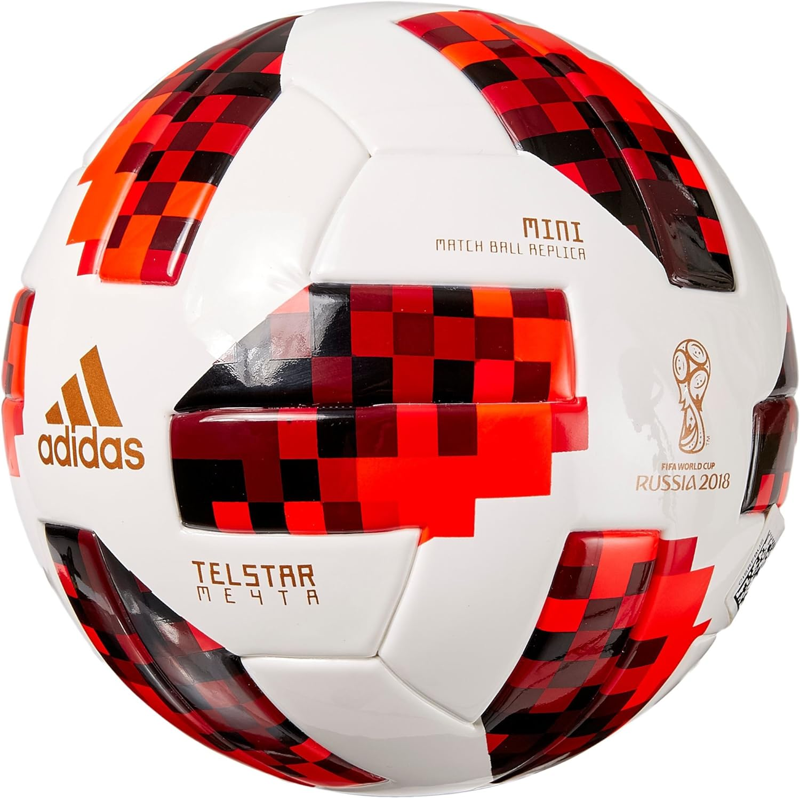
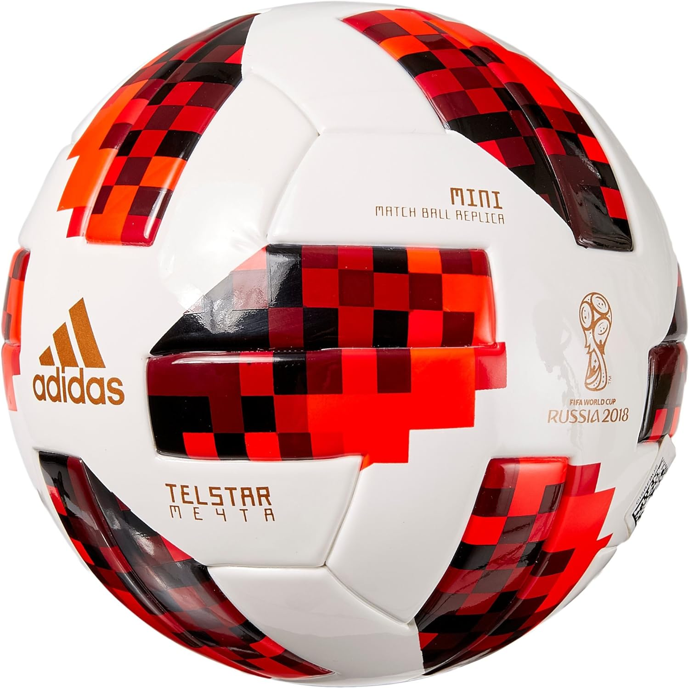
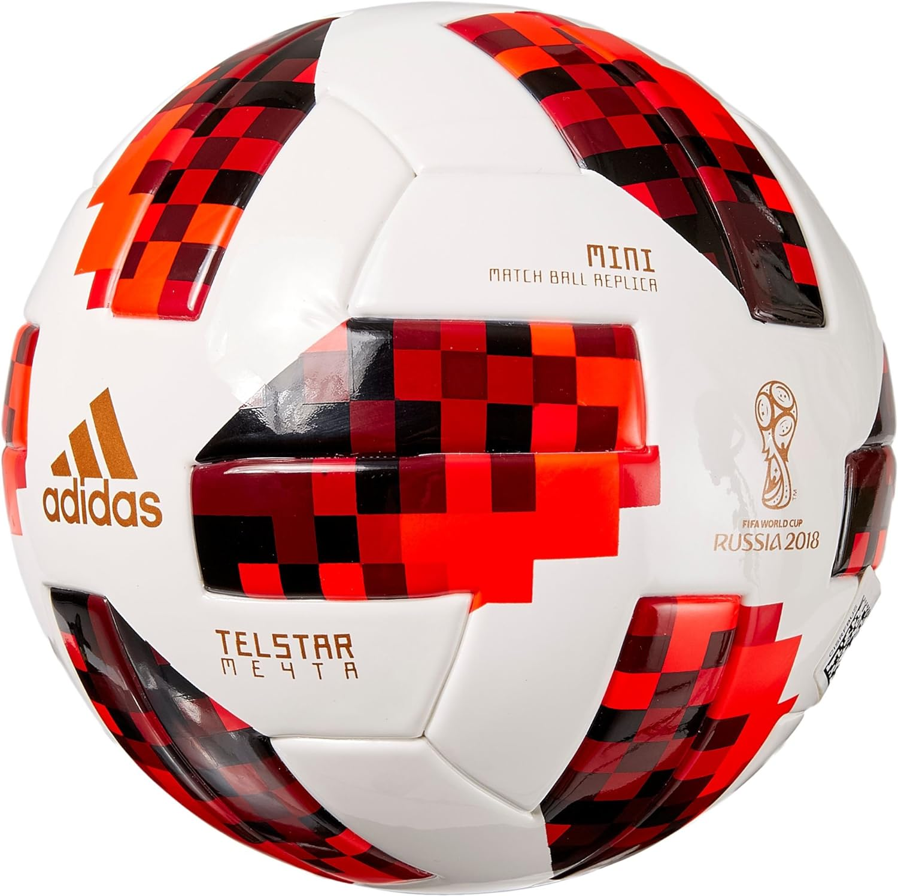
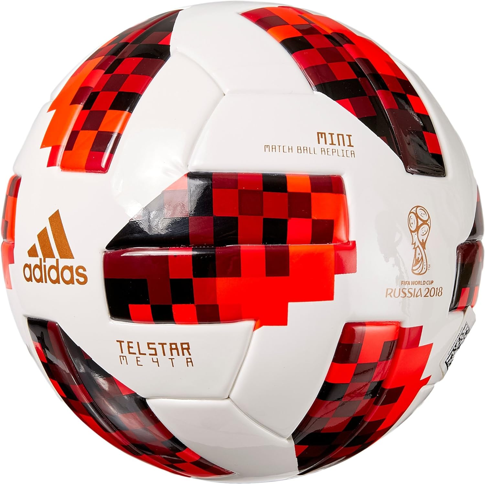

El diseño del Telstar 18 está inspirado en el balón original Telstar utilizado en la Copa Mundial de la FIFA 1970 en México. Presenta una estructura de paneles blancos y negros interconectados, creando un patrón estelar que le da su nombre.
El nombre "Telstar" se eligió originalmente para el balón de 1970 debido a su asociación con la tecnología de comunicación por satélite. La palabra "Telstar" proviene de la combinación de "televisión" y "estrella".
Está construido con tecnología de última generación para proporcionar un rendimiento óptimo en el campo. Incluye una capa externa de poliuretano termoplástico que mejora la durabilidad y la resistencia al desgaste.
El balón tiene una estructura de seis paneles, lo cual es una característica común en los balones de fútbol modernos. La superficie de los paneles está texturizada para mejorar el agarre y el control del balón.
La elección de revivir el nombre y diseño del Telstar para el balón de la Copa Mundial de 2018 se hizo para rendir homenaje a la historia del torneo y a los balones clásicos utilizados en ediciones anteriores.
El vencedor de la final disputada entre Francia y Croacia fue la selcción francesa por un abultado 4-2.